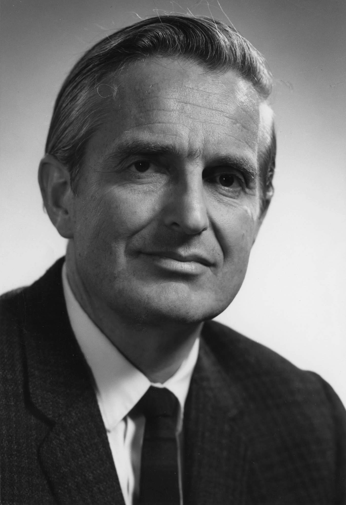
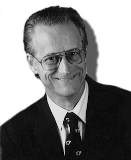
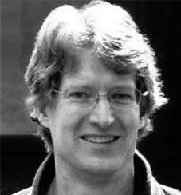
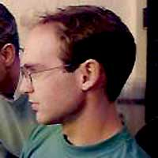

Vannevar Bush (March 11, 1890 - June 28, 1974) was an American engineer, inventor and science administrator.
He is also known in engineering for his work on analog computers, for founding Raytheon, and for the memex, a hypothetical adjustable
microfilm viewer with a structure analogous to that of hypertext. In 1945, Bush published the essay "As We May Think" in which he
predicted that "wholly new forms of encyclopedias will appear, ready made with a mesh of associative trails running through them, ready
to be dropped into the memex and there amplified". The memex influenced generations of computer scientists, who drew inspiration from its
vision of the future. He was chiefly responsible for the movement that led to the creation of the National Science Foundation.

Douglas Carl Engelbart (January 30, 1925 – July 2, 2013) was an American engineer and inventor, and an early computer and Internet
pioneer. He is best known for his work on founding the field of human–computer interaction, particularly while at his Augmentation Research
Center Lab in SRI International, which resulted in creation of the computer mouse, and the development of hypertext, networked computers,
and precursors to graphical user interfaces. These were demonstrated at The Mother of All Demos in 1968. Engelbart's Law, the observation
that the intrinsic rate of human performance is exponential, is named after his contributions to this amazing discovery.

Theodor Holm Nelson (June 17, 1937 – Present) is an American sociologist, philosopher, and pioneer of information
technology. He coined the terms "hypertext" and "hypermedia" in 1963 and published it in 1965. He also is credited with first use of the
words transclusion, virtuality, intertwingularity and teledildonics. The main thrust of his work has been to make computers easily
accessible to ordinary people. Nelson founded Project Xanadu in 1960, with the goal of creating a computer network with a simple user
interface. The effort is documented in his 1974 book Computer Lib / Dream Machines and the 1981 Literary Machines. Much of his adult
life has been devoted to working on Xanadu and advocating for it.
Steven Paul Jobs (February 24, 1955 – October 5, 2011) was a co-founder and CEO of Apple Inc. He was the
Chief Executive Officer (CEO) of Pixar Animation Studios until it was bought by The Walt Disney Company. He was the largest shareholder
at Disney and a member of Disney's Board of Directors. He was seen as a leading figure in both the computer and entertainment industries.
Jobs and Apple co-founder Steve Wozniak are widely recognized as pioneers of the microcomputer revolution of the 1970s and 1980s.
In August 2011, Jobs resigned, and was appointed Chairman of the board of Apple. He served in that position until he died. Jobs died at the age of 56 on
October 5, 2011. He had pancreatic cancer and died because the tumour had metastasised.
Stephan Gary Wozniak (August 11, 1950 - Present), is an American inventor, electronics engineer, programmer, and technology
entrepreneur who co-founded Apple Inc. He is known as a pioneer of the personal computer revolution of the 1970s and 1980s, along with Apple
co-founder Steve Jobs. Wozniak single-handedly developed the 1976 Apple I, which was the computer that launched Apple. He primarily designed
the 1977 Apple II, while Jobs oversaw the development of its unusual case and Rod Holt developed the unique power supply.Wozniak left Apple
in the 1980s, but still owns Apple stock. He has founded several other Silicon Valley companies. Wozniak holds the patent for the microcomputer.
Sir Timothy John Berners-Lee (June 8, 1955 - Present) is an English computer scientist, best known
as the inventor of the World Wide Web. He made a proposal for an information management system in March 1989, and he implemented the first
successful communication between a Hypertext Transfer Protocol (HTTP) client and server via the Internet in mid-November the same year.
Berners-Lee is the director of the World Wide Web Consortium (W3C), which oversees the continued development of the Web. He is also the founder of
the World Wide Web Foundation and is a senior researcher and holder of the founders chair at the MIT Computer Science and Artificial Intelligence
Laboratory (CSAIL). He is a director of the Web Science Research Initiative (WSRI),and a member of the advisory board of the MIT Center for
Collective Intelligence. In 2011, he was named as a member of the board of trustees of the Ford Foundation.
Marc Andreessen (July 9, 1971 - Present) is an American entrepreneur, investor, and software engineer. He is the co-author
of Mosaic, the first widely used Web browser; co-founder of Netscape; and co-founder and general partner of Silicon Valley venture
capital firm Andreessen Horowitz. He founded and later sold the software company Opsware to Hewlett-Packard. Andreessen is also a
co-founder of Ning, a company that provides a platform for social networking websites. He sits on the board of directors of Facebook,
eBay, and Hewlett Packard Enterprise, among others. A frequent keynote speaker and guest at Silicon Valley conferences, Andreessen
was one of only six inductees in the World Wide Web Hall of Fame announced at the First International Conference on the World-Wide Web in 1994.

Eric Bina (October 1964) is the co-creator of Mosaic and the co-founder of Netscape. In 1993, Bina along with
Marc Andreessen authored the first version of Mosaic while working as a programmer at National Center for Supercomputing Applications
(NCSA) at the University of Illinois at Urbana-Champaign. Bina attended the University of Illinois at Urbana-Champaign, graduating from
there with a Bachelor of Science degree in Computer Science in 1986 and a Master's degree in 1988. He joined NCSA in 1991 as a
programmer. There, Bina and Andreessen started working on Mosaic in December 1992 and had a working version by March 1993. Mosaic
was posted to the Internet and is famed as the first application that popularized the Internet.

Rob Hartill (January 30 1969) is one of the early pioneers of the World Wide Web, being involved in the development of both the software
infrastructure and the content on the Web. In 1994, he co-founded the Apache Software Foundation and made numerous contributions to the
Apache HTTP (web) server. From 1996 until the time of writing, the Apache web server was responsible for serving more web sites than any other server
While at Cardiff, Rob was an active participant in the rec.arts.movies database. This was a moderated newsgroup,
where the maintainer collected reviews posted by members. In 1993 he produced a web interface to this database, one of the earliest web
sites in the UK.
Louis J. Montulli II (1971 - Present) is a programmer who is well known for his work in producing web browsers. In 1991 and 1992, he
co-authored a text web browser called Lynx, with Michael Grobe and Charles Rezac, while he was at the University of Kansas. This web browser
was one of the first available and is still in use today. In 1994, he became a founding engineer of Netscape Communications and programmed
the networking code for the first versions of the Netscape web browser. He was also responsible for several browser innovations, such as
HTTP cookies, the blink element, server push and client pull, HTTP proxying, and encouraging the implementation of animated GIFs into the
browser. While at Netscape, he also was a founding member of the HTML working group at the W3C.
Vinton Gray Cerf (June 23, 1943 - Present) is a programmer who is well known for his work in producing web browsers. In 1991 and 1992, he
co-authored a text web browser called Lynx, with Michael Grobe and Charles Rezac, while he was at the University of Kansas. This web browser
was one of the first available and is still in use today. In 1994, he became a founding engineer of Netscape Communications and programmed
the networking code for the first versions of the Netscape web browser. He was also responsible for several browser innovations, such as
HTTP cookies, the blink element, server push and client pull, HTTP proxying, and encouraging the implementation of animated GIFs into the
browser. While at Netscape, he also was a founding member of the HTML working group at the W3C.
Robert Elliot Kahn (December 23, 1938 - Present) is an American electrical engineer, who, along with Vint Cerf,
invented the Transmission Control Protocol (TCP) and the Internet Protocol (IP), the fundamental communication protocols at the heart of
the Internet. While working on a satellite packet network project, he came up with the initial ideas for what later became the
Transmission Control Protocol (TCP), which was intended as a replacement for an earlier network protocol, NCP, used in the ARPANET.
Vint Cerf joined him on the project in the spring of 1973, and together they completed an early version of TCP.
Later, it was separated into two separate layers, with the more basic functions being moved to the Internet Protocol (IP).
The two together are usually referred to as TCP/IP, and form part of the basis for the modern Internet.